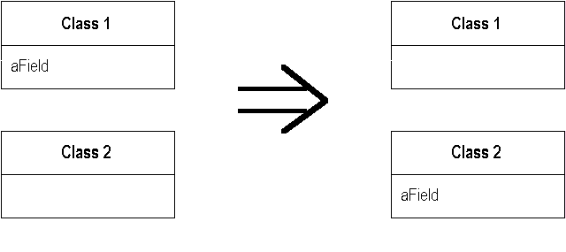

Move Field
A field is, or will be, used by another class more than the class on which it is defined.
Create a new field in the target class, and change all its users.

For more information see page
146
of Refactoring
| Refactoring Home | | Alphabetical List |